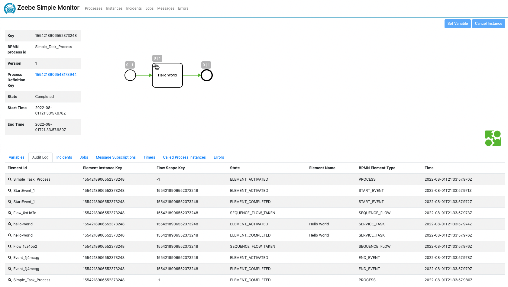
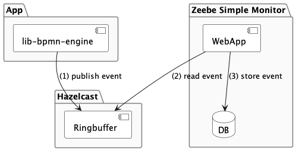

Zeebe Exporter (visualization)
Visualize process state via Zeebe Simple Monitor
Overview
Since lib-bpmn-engine runs embedded in your application, it's a challenge, to "see what's happen inside". Therefore, this library exports all internal events and you can register various event exporters. That might be a simple STDOUT exporter, or one that exports to a dedicated visualisation application.
There's an Open Source Web UI for monitoring BPMN processes Zeebe Simple Monitor. Fortunately, the authors did design the monitor as an event consumer. Thus, by exporting Zeebe compatible events, you're able to monitor your processes.
Screenshot

Architecture
As shown in the architecture diagram, your App and Zeebe Simple Montor don't connect to each other, but rather your app needs to connect to a Hazelcast Ringbuffer. Once connected, the built-in Zeebe Exporter will export events to this Ringbuffer. The Zeebe Simple Monitor (ZSM) is a Java based application, which connects to the Ringbuffer as well and fetches events from there. Once fetched, ZSM stores events in it's own database. The ZSM database can be configured to your preferences.
Please, keep in mind, this architecture does not support any namespacing. Means, when multiple of your applications connect to the same Ringbuffer, all events will be mixed up. That's less an issue technically, but might confuse your users.

Limitations
As with the first and experimental release, just a handful of events are supported. This means, in contract to a full flavoured Zeebe cluster, events are missing and will not be shown. That said, basic functionality in Simple Monitor is given.
Once you application restarts, workflows are newly deployed and so they are shown multiple times in Zeebe Simple Monitor (ZSM). This is because of the design/architecture of lib-bpmn-engine. With a new start of your app, a new ID will be assigned and ZSM ha no chance to detect former workflows/processes are identical.
Housekeeping is missing in ZSM, which results in events just stack up and will slow down your database.
The ringbuffer support in Hazelcast's Go client is not yet officially merged. So, lib-bpmn-engine uses a feature branch of the client to write to the ringbuffer.
Setup for tinkering/experimenting
Here are some hints, how you can quickly spin up a setup for experimenting. If you aim for a more production ready setup, please read&learn how to do such with Hazelcast and Zeebe Simple Monitor on their official web sites individually.
Hazelcast
First, you need a running Hazelcast. The simplest way is using Docker...
Zeebe Simple Monitor
Using Docker, also allows you to start a Zeebe Simple Monitor...
docker run -p 8082:8082 -e "zeebe.client.worker.hazelcast.connection=$(hostname):5701" ghcr.io/camunda-community-hub/zeebe-simple-monitor:2.4.0```
⚠️ The above Docker containers do expose each service without any authentication! This mean, anyone in your network can connect to it - please, use a proper firewall or other tools to secure your system.
Zeebe Exporter Showcase App
package main
import (
"context"
"fmt"
"github.com/hazelcast/hazelcast-go-client"
"github.com/nitram509/lib-bpmn-engine/pkg/bpmn_engine"
"github.com/nitram509/lib-bpmn-engine/pkg/bpmn_engine/exporter/zeebe"
)
func main() {
// create a new named engine
bpmnEngine := bpmn_engine.New()
// the exporter will require a running Hazelcast cluster at 127.0.0.1:5701
ctx := context.TODO()
config := hazelcast.Config{}
config.Cluster.Network.SetAddresses("localhost:5701")
client, err := hazelcast.StartNewClientWithConfig(ctx, config)
// create the client
exporter, _ := zeebe.NewExporterWithHazelcastClient(client)
// register the exporter
bpmnEngine.AddEventExporter(&exporter)
// basic example loading a BPMN from file,
process, err := bpmnEngine.LoadFromFile("simple_task.bpmn")
if err != nil {
panic("file \"simple_task.bpmn\" can't be read.")
}
// register a handler for a service task by defined task type
bpmnEngine.NewTaskHandler().Id("hello-world").Handler(printContextHandler)
// and execute the process
instance, _ := bpmnEngine.CreateAndRunInstance(process.ProcessKey, nil)
println(fmt.Sprintf("instanceKey=%d", instance.GetInstanceKey()))
}
func printContextHandler(job bpmn_engine.ActivatedJob) {
// trivial handler is requires
job.Complete()
}